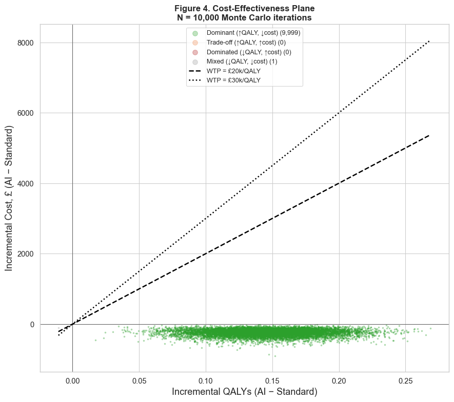
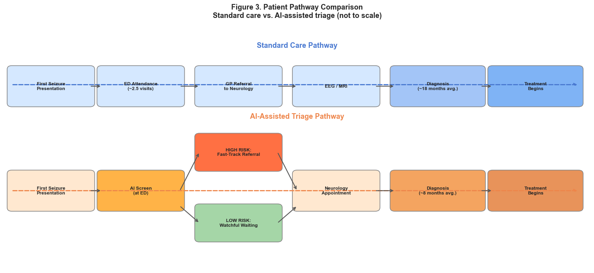
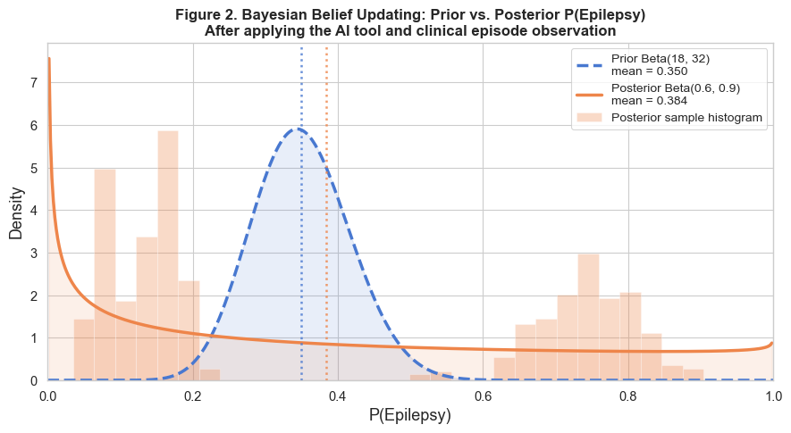
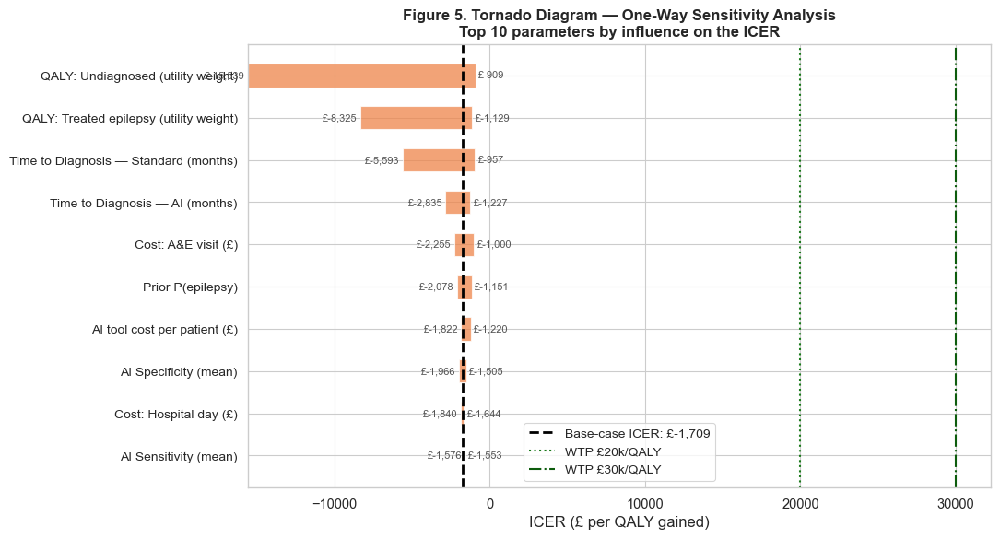
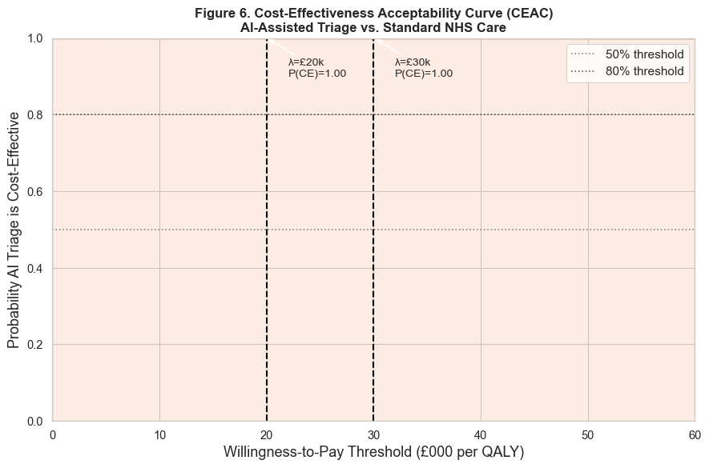

A Monte Carlo framework that estimates whether an AI diagnostic-triage tool is worth funding. It runs synthetic patient cohorts through two care pathways and reports a full distribution of cost-effectiveness outcomes, not a single number.
Monte Carlo · Bayesian updating · ICER / QALYs · Sensitivity analysis · NHS reference costs · MIMIC-IV

Clinical AI is usually judged on accuracy: sensitivity, specificity, AUC. The question a funder actually asks is different. Does the tool save money and improve outcomes across a whole population? This project builds the machinery to answer that, using AI triage in first-seizure clinics as a worked example.
I simulate 10,000 patient cohorts through two parallel pathways, standard care and AI-assisted triage, and compare them. Costs are drawn from Gamma distributions fitted to NHS reference costs; time-to-diagnosis follows LogNormal distributions grounded in the epilepsy literature; and the shapes of the hospital-pathway parameters come from MIMIC-IV records. To compare the two pathways fairly, each patient is routed through both using common random numbers, which cancels noise and sharpens the contrast.

Figure 1. The two pathways. Each simulated patient runs through both standard care and AI-assisted triage, so the difference in cost and outcome is measured patient by patient.
The AI tool does not replace the clinician; it shifts a belief. I model the tool's output as evidence that moves a clinician's prior probability of a diagnosis to a posterior, through Bayes' theorem. A vectorised version runs the same update across the whole cohort at simulation speed.

Figure 2. Prior to posterior. The AI output updates the clinician's belief, which then changes the downstream pathway the patient takes.
For each run I compute the incremental cost and the incremental quality-adjusted life years (QALYs), and combine them into an incremental cost-effectiveness ratio (ICER). Plotting every run on the cost-effectiveness plane, against the NICE willingness-to-pay thresholds, turns a single verdict into a cloud of outcomes (the cover figure). That cloud is the honest picture: it shows how often the tool is worth funding, not just whether the average run clears the bar.
A one-way sensitivity analysis varies each parameter in turn to see which ones move the cost-effectiveness most. The tornado diagram ranks them, which tells a commissioner where the uncertainty actually lives and which numbers are worth measuring better.

Figure 3. One-way sensitivity analysis. The widest bars are the parameters the result depends on most.
The cost-effectiveness acceptability curve reads the simulation from a decision-maker's seat: at each willingness-to-pay threshold, what is the probability the tool is the cost-effective choice? That probability, rather than a single ICER, is what supports a funding decision.

Figure 4. The acceptability curve. It maps each willingness-to-pay threshold to the probability that the tool is the cost-effective option.
The framework and code are complete and validated, with a fixed seed so every run reproduces. The current figures use synthetic placeholder parameters while the real MIMIC-IV extracts are integrated, so the numbers will move but the machinery will not. The full notebook and the data provenance are in the repository.